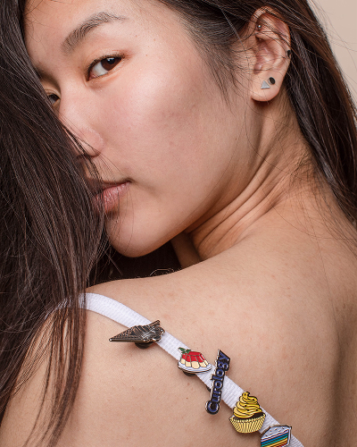
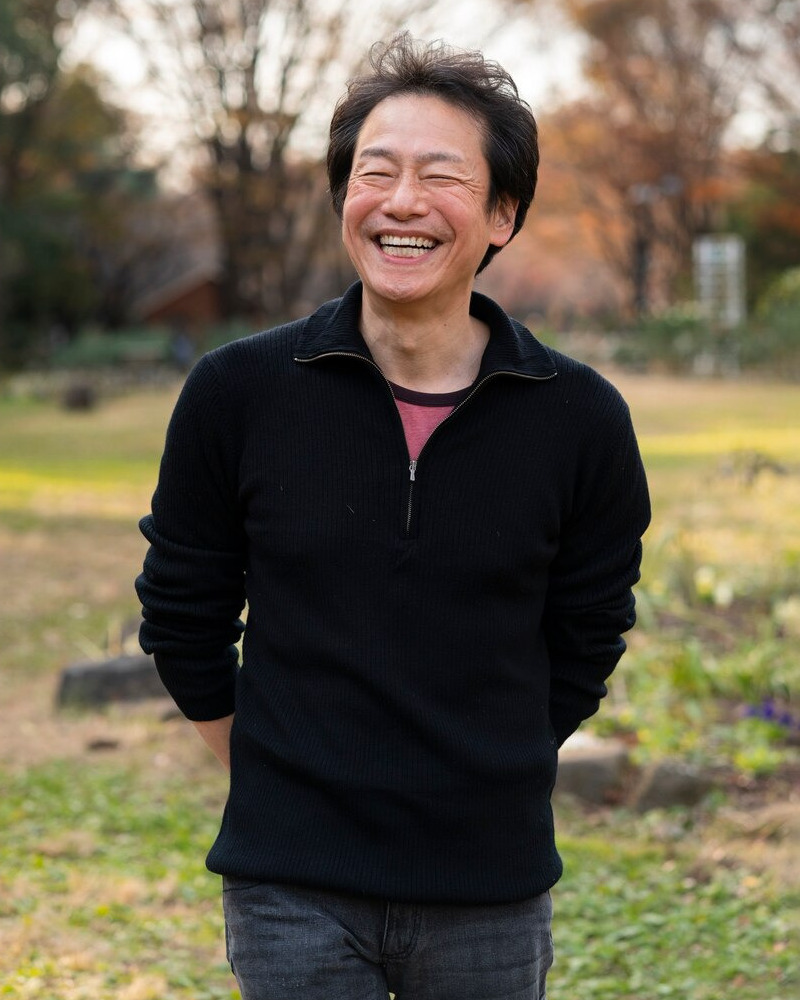

他們已經踏上職旅
聽聽他們的故事
每一段職涯轉型都有獨特挑戰，這些曾經與你有相同疑惑的夥伴，現在正過著他們嚮往的生活
-
 數位遊牧 2 年
轉型成功的設計師
從企業設計師轉職自由接案，比我想的難太多。收入不穩時我幾乎想放棄，是職旅顧問幫我找回方向與差異化。半年後，我不僅維持收入，還能自由挑案，最重要的是，我終於有時間陪爸媽。
視覺設計師
郭敏迪 (34y)
-
 數位遊牧 2
年
數位遊牧 2
年
數位遊牧生活實踐者
兩年前我只想環遊世界，卻不知道怎麼開始。職旅給了我遠端工作與生活規劃的指導。現在我在五個國家工作過，收入比以前多 20%。每次打開電腦，看見窗外不同的風景，都慶幸當初那一個決定。
內容策略師
林雨潔 (29y)
-

中年轉型的工程師
59 歲被裁員時，我以為職涯結束了。職旅顧問不只幫我轉職，更讓我相信自己還有價值。現在我每月穩定接案、收入翻倍。年齡不是限制，只是我還沒找到對的方向。
系統架構顧問
張世明 (62y)
選擇職旅 WorkWay
-
ads_click
實戰經驗
我們的顧問都是親身走過這條路的專家，不是紙上談兵的理論家。你所學到的每一個建議，都是經過無數次嘗試與錯誤後萃取的精華。
-
ads_click
全方位支持
從心態調整到實際操作，從品牌建立到財務規劃，我們提供你轉型路上需要的每一塊拼圖，讓不確定感不再阻礙你的決定。
-
ads_click
社群力量
加入職旅不只是獲得諮詢，更是連結到一群志同道合的夥伴。在這裡，你的疑惑有人解答，你的成就有人分享，你的旅程不再孤單。
遇見你的職涯夥伴
每位顧問都有獨特專長，更重要的是：
“ 他們都曾面對你正在經歷的挑戰 ”
職旅 WorkWay 匯集了來自不同領域、擁有豐富實戰經驗的自由工作者與數位遊牧專家。我們的顧問不只教授理論，更分享親身經歷的挑戰與解決之道。
我們相信，最好的指導來自於那些已經走過你想走的路，並願意伸出手拉你一把的人。
服務流程
簡單四步，踏上你的職旅
-
STEP 1
免費註冊會員
透過網站左上角按鈕，立即註冊免費會員，與我們開始建立連結。
-
STEP 2
填寫職旅計劃
了解你的技能、熱情與市場需求的交會點，找出屬於你的獨特定位。
-
STEP 3
初次諮詢
依據你的目標與現況，給予最直接的建議，建立清晰的轉型思路。
-
STEP 4
實戰指導
專家一對一指導，從品牌建立到客戶開發，每一步都有明確方向。
你可能有些困惑...
-
Q.
一對一諮詢是怎麼進行的？需要準備什麼嗎？
chevron_leftA.諮詢通常採 Google Meet 或 Zoom，時長約 30 分鐘。我們建議你在預約前先簡單整理目前的狀態、遇到的困難、或想達成的目標。如果你不確定，顧問也會從對話中引導你探索，無需擔心準備不夠。
-
Q.
自由職涯真的可以養活自己嗎？你們怎麼協助？
chevron_leftA.諮詢通常採 Google Meet 或 Zoom，時長約 30 分鐘。我們建議你在預約前先簡單整理目前的狀態、遇到的困難、或想達成的目標。如果你不確定，顧問也會從對話中引導你探索，無需擔心準備不夠。
-
Q.
職旅 WorkWay 的收費方式是怎麼計算的？
chevron_leftA.諮詢通常採 Google Meet 或 Zoom，時長約 30 分鐘。我們建議你在預約前先簡單整理目前的狀態、遇到的困難、或想達成的目標。如果你不確定，顧問也會從對話中引導你探索，無需擔心準備不夠。
-
Q.
如果諮詢後發現不適合，會有退款保障嗎？
chevron_leftA.諮詢通常採 Google Meet 或 Zoom，時長約 30 分鐘。我們建議你在預約前先簡單整理目前的狀態、遇到的困難、或想達成的目標。如果你不確定，顧問也會從對話中引導你探索，無需擔心準備不夠。
-
Q.
我現在還不確定自己要什麼，也可以預約諮詢嗎？
chevron_leftA.諮詢通常採 Google Meet 或 Zoom，時長約 30 分鐘。我們建議你在預約前先簡單整理目前的狀態、遇到的困難、或想達成的目標。如果你不確定，顧問也會從對話中引導你探索，無需擔心準備不夠。